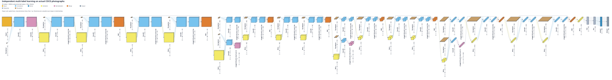
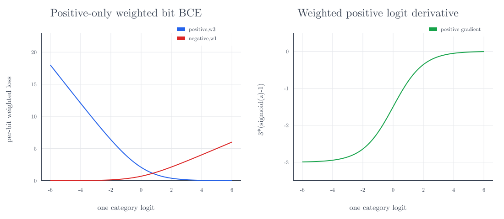
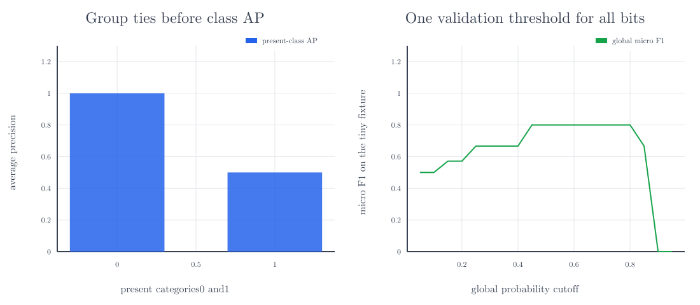
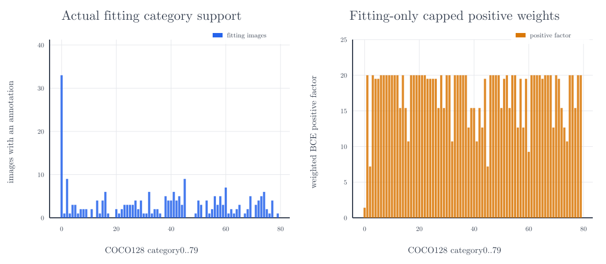
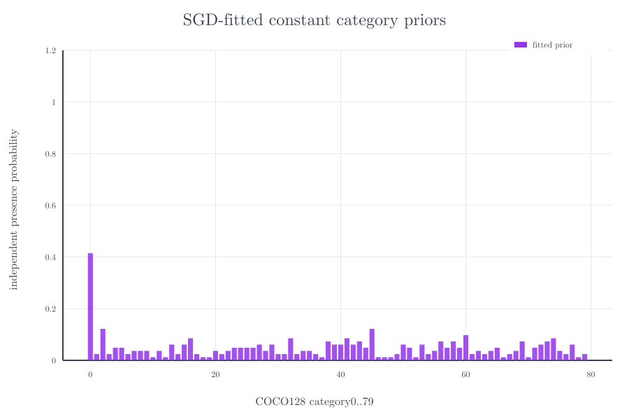
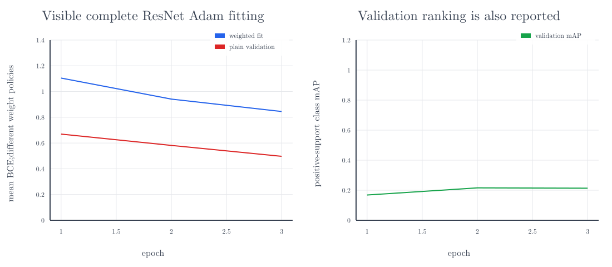
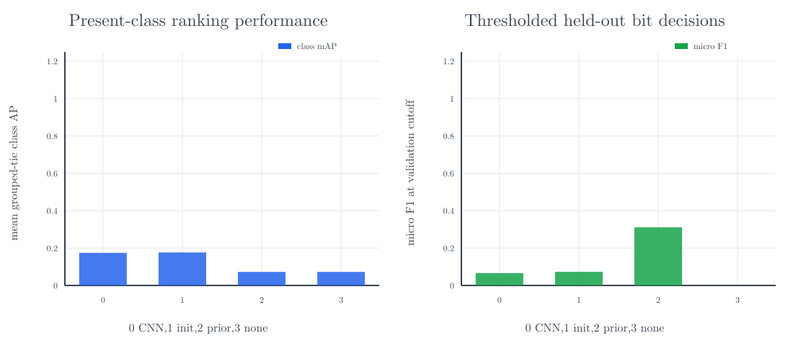
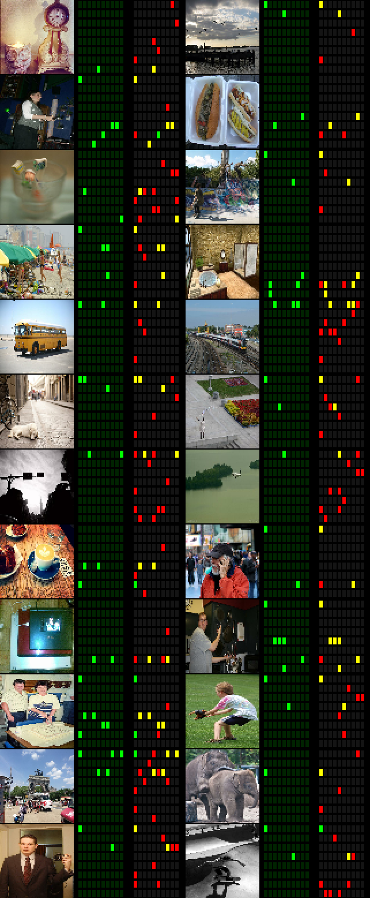
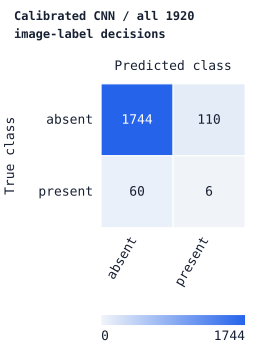

Independent multi-label learning on actual COCO photographs
Abstract
One photograph can contain several annotated categories. Stable weighted sigmoid BCE,grouped-tie AP and hand confusion examples precede full ResNet checks,actual COCO128 image/support previews,visible SGD priors and complete-model Adam. Paired BN restoration,validation-only cutoffs and every held-out decision bitmap remain explicit.
Source example: examples/cpp/source/nn/1_convolutional_neural_networks/1.8_other_vision_tasks/multilabel_classification.cpp.
The method
Predict80 independent category-presence bits,weight rare positive fitting targets,and optimize explicit Bernoulli BCE. Keep official source annotations distinct from the custom80/24/24 split,group ranking ties,and select checkpoints and global cutoffs using separate validation images.
The concept diagram below is drawn by dm::graphics::Diagram. Its editable C++
source is the complete block below; regeneration uses the same datamunge toolchain
as the numerical examples. Exports consume the saved local SVG.
#include <dm/dm.hpp>
int main() {
std::filesystem::create_directories("build");
dm::graphics::Diagram diagram;
diagram.node("n0", {0.0, 0}, "Observed RGB image\nIndependent presence bits");
diagram.node("n1", {5.2, 0}, "Visible SGD and Adam\nFit-only class factors");
diagram.node("n2", {10.4, 0}, "Paired BN restore\nCalibrate and inspect");
diagram.edge("n0", "n1").edge("n1", "n2");
diagram.save_svg("build/multilabel_classification_concept.svg");
}
Executed tensor architecture
This figure executes the inference configuration shown in the code, using a zero-valued shape probe without fitting or loading a checkpoint. Named stage boundaries group whole subgraphs where available; other nodes retain functional-layer detail. Exact batch-inclusive shapes and reachable parameter totals come from the trace. Shared linear scales map spatial dimensions and channel counts to blocks; the one-pixel visibility floor is disclosed in the legend. Labels use compact monospace text, rotate counterclockwise and sit beside their own glyphs. Arrows flow left to right; wide diagrams scroll at native size on the website.
#include <dm/dm.hpp>
int main() {
namespace n = dm::nn;
namespace m = n::models;
n::set_num_threads(2);
std::filesystem::create_directories("build");
n::ParameterStore p(17), state(18);
auto c = m::MultilabelConfig();
n::Module architecture_model(
[&](const n::Tensor& image) { return m::ResNet(p, state, image, c, false).logits; },
"Independent multi-label learning on actual COCO photographs");
n::ModelPlotOptions options;
options.style = n::ModelPlotStyle::Flow;
options.detail = n::ModelPlotDetail::Blocks;
options.labels = {.type = n::ModelPlotLabel::NameAndShape, .size = 12, .wrap = 24};
options.spacing = {.layer = 24, .lane = 12, .label = 8, .margin = 20};
options.sizing.spatial_size = 96;
options.sizing.channel_size = 42;
options.sizing.minimum_extent = 1;
options.opacity = .8;
const auto diagram = architecture_model.plot(n::zeros({1, 64, 64, 3}), options);
diagram.save_svg("build/multilabel_classification_architecture.svg");
std::print(
"{} displayed nodes; {} reachable learned values.\n",
diagram.nodes().size(),
diagram.parameter_count());
}90 displayed nodes; 180952 reachable learned values.

Independent category bits need independent sigmoids
A photograph may contain several categories. Its target is an80-bit presence vector,not one mutually exclusive class. For one logit z and target y,stable Bernoulli cross entropy is \(\ell=\operatorname{softplus}(z)-yz\). Fitting-only positive factors w_c give
The denominator stays N*C;it is not the sum of weights. The zero-logit derivative is exactly weight_factor*(.5-y)/(N*C). Native independent oracles check every weighted derivative at zero and logits +/-1000. Sigmoid outputs need not sum to one. The illustration uses one category with positive weight3; its per-bit derivative is recovered by multiplying the mean-loss gradient by 121 sample logits. No fitting occurs in this controlled example.
#include <dm/dm.hpp>
int main() {
namespace n = dm::nn;
namespace m = n::models;
auto z = n::linspace(-6, 6, 121).requires_grad_();
const auto positive = 3. * m::SiameseBinaryCrossEntropy(z, n::ones_like(z)),
negative = m::SiameseBinaryCrossEntropy(z, n::zeros_like(z));
const auto objective =
m::MultilabelObjective(z.reshape({121, 1}), n::ones({121, 1}), n::tensor({3.}));
const auto derivative = n::grad(objective, {z})[0] * 121.;
if (std::abs(derivative.to_vector<float>()[60] + 1.5) > 1e-6)
return 1;
auto a = dm::graphics::RPlot::create(), b = dm::graphics::RPlot::create();
a.lines(z.to_vector<double>(), positive.to_vector<double>(), "positive,w3", {37, 99, 235})
.lines(z.to_vector<double>(), negative.to_vector<double>(), "negative,w1", {220, 38, 38})
.title("Positive-only weighted bit BCE")
.x_label("one category logit")
.y_label("per-bit weighted loss")
.y_limits(0, 23);
b.lines(z.to_vector<double>(), derivative.to_vector<double>(), "positive gradient",
{22, 163, 74})
.title("Weighted positive logit derivative")
.x_label("one category logit")
.y_label("3*(sigmoid(z)-1)")
.y_limits(-3.5, .5);
std::filesystem::create_directories("build");
auto layout = dm::graphics::RLayout::create(1, 2);
layout.add(a).add(b).size(1100, 480).fit_panels().save_svg(
"build/multilabel_classification_objective.svg");
std::print("Positive factor3;zero-logit per-bit gradient-1.5. Mean weighted objective "
"{:.6f};native every-logit extreme/zero derivative checks pass.\n",
objective.item());
}Positive factor3;zero-logit per-bit gradient-1.5. Mean weighted objective 4.944064;native every-logit extreme/zero derivative checks pass.

Group score ties before computing average precision
AP weights precision by recall increments at *distinct score groups*. A constant score therefore gives the positive prevalence,independent of row order. This avoids treating arbitrary order within a tie as model discrimination. Classes with no positive truth are reported and excluded from mAP;macro F1 still averages all80 classes,using zero when its class denominator is zero.
For the tiny probability/target matrices \(P=[[.9,.8,.1],[.2,.8,.4]]\),\(Y=[[1,0,0],[0,1,0]]\),class APs are1 and.5; the third class has no positive support. Thus mAP=.75,micro AP=5/6. At cutoff.5,TP/FP/FN/TN=2/1/0/3,micro F1=.8,Hamming=1/6,and exact-image match=.5. One *global validation* threshold is selected from.05 through.95 in.05 steps plus1.01(predict none). F1 ties within1e-12 take the highest cutoff. Threshold selection changes decisions;it does not change ranking AP.
#include <dm/dm.hpp>
int main() {
namespace n = dm::nn;
namespace m = n::models;
const auto p = n::tensor({.9, .8, .1, .2, .8, .4}, {2, 3}),
y = n::tensor({1., 0., 0., 0., 1., 0.}, {2, 3});
const auto score = m::ScoreMultilabel(p, y, .5);
const auto selected = m::CalibrateMultilabel(p, y);
if (std::abs(score.map.item() - .75) > 1e-12 ||
std::abs(score.micro_ap.item() - 5. / 6) > 1e-12)
return 1;
const auto constant = m::MultilabelAP(n::full({4}, .5), n::tensor({1., 0., 1., 0.}));
if (constant.item() != .5)
return 1;
const auto thresholds = n::arange(1, 20, 1, n::DType::Float64) * .05;
std::vector<double> f1;
for (const auto t : thresholds.to_vector<double>())
f1.push_back(m::ScoreMultilabel(p, y, t).micro_f1.item());
auto a = dm::graphics::RPlot::create(), b = dm::graphics::RPlot::create();
a.bars({0, 1},
{m::MultilabelAP(n::select(p, 1, 0), n::select(y, 1, 0)).item(),
m::MultilabelAP(n::select(p, 1, 1), n::select(y, 1, 1)).item()},
"present-class AP", {37, 99, 235}, .6)
.title("Group ties before class AP")
.x_label("present categories0 and1")
.y_label("average precision")
.y_limits(0, 1.3);
b.lines(thresholds.to_vector<double>(), f1, "global micro F1", {22, 163, 74})
.title("One validation threshold for all bits")
.x_label("global probability cutoff")
.y_label("micro F1 on the tiny fixture")
.y_limits(0, 1.3);
std::filesystem::create_directories("build");
auto layout = dm::graphics::RLayout::create(1, 2);
layout.add(a).add(b).size(1100, 480).fit_panels().save_svg(
"build/multilabel_classification_ties.svg");
std::print("Tiny fixture:mAP {:.6f},microAP {:.6f},microF1 {:.6f},macroF1 {:.6f},Hamming "
"{:.6f},exact {:.6f};TP/FP/FN/TN {}/{}/{}/{};2 supported/1 absent class. "
"Selected cutoff {:.6f};constant-score AP=.5. Native float32/double-cutoff and "
"highest-tie tests pass.\n",
score.map.item(), score.micro_ap.item(), score.micro_f1.item(),
score.macro_f1.item(), score.hamming.item(), score.exact.item(),
score.tp.item<std::int64_t>(), score.fp.item<std::int64_t>(),
score.fn.item<std::int64_t>(), score.tn.item<std::int64_t>(), selected.item());
}Tiny fixture:mAP 0.750000,microAP 0.833333,microF1 0.800000,macroF1 0.555556,Hamming 0.166667,exact 0.500000;TP/FP/FN/TN 2/1/0/3;2 supported/1 absent class. Selected cutoff 0.800000;constant-score AP=.5. Native float32/double-cutoff and highest-tie tests pass.

Full and compact80-logit ResNets execute
A small-stem ResNet18 retains eight residual blocks,global average pooling and a biased80-logit head. Full widths have11,209,872 learned scalars plus 9,600 BN moving scalars. Compact widths divided by8 have180,952 learned scalars plus1,200 BN moving scalars. Both have62 learned tensors and40 moving moment tensors. The following block executes full and compact forward/backward passes at64px;the compact check requires every learned tensor and RGB gradient to be nonzero. BN uses old-value retention.9. There is no pretraining or dropout.
#include <dm/dm.hpp>
int main() {
namespace n = dm::nn;
namespace m = n::models;
n::set_num_threads(2);
for (int divisor : {1, 8}) {
n::ParameterStore p(251), state(257);
auto rgb = (.5 + .4 * n::sin(n::arange(0, 2 * 64 * 64 * 3).reshape({2, 64, 64, 3}) * .17))
.requires_grad_();
const auto net = m::ResNet(p, state, rgb - .5, m::MultilabelConfig(divisor), true);
auto variables = p.parameters();
variables.push_back(rgb);
const auto gradient = n::grad(n::mean(n::square(net.logits)), variables);
if (p.count() != (divisor == 1 ? 11209872 : 180952) ||
state.count() != (divisor == 1 ? 9600 : 1200) || p.size() != 62 ||
state.size() != 40 || gradient.size() != 63 || net.blocks.size() != 8)
return 1;
for (const auto &g : gradient)
if (!g.defined() || !std::isfinite(n::norm(g).item()) ||
(divisor == 8 && n::norm(g).item() <= 0))
return 1;
std::print("{} ResNet18:{} learned/{} moving scalars;62 finite parameter gradients plus "
"RGB,40 moving tensors,8 residual blocks,80 independent logits.\n",
divisor == 1 ? "Full" : "Compact", p.count(), state.count());
}
}Full ResNet18:11209872 learned/9600 moving scalars;62 finite parameter gradients plus RGB,40 moving tensors,8 residual blocks,80 independent logits. Compact ResNet18:180952 learned/1200 moving scalars;62 finite parameter gradients plus RGB,40 moving tensors,8 residual blocks,80 independent logits.
Prepare and inspect actual COCO128 annotation-presence data
COCO128 supplies128 original COCO train2017 photographs and YOLO-style category
annotations. This report uses a reproducible **custom**80/24/24 split:sort
original image IDs,shuffle metadata with Python Random(271),then take80 fit,
24 validation and24 test rows. These are not official COCO evaluation splits.
The source archive fingerprint,selected IDs and category sets are recorded in
manifest.json;the preparation command may select different rows from an old
external multilabel.npz.
#include <dm/dm.hpp>
int main() {
const std::filesystem::path cache = dm::datasets::data_home();
dm::datasets::prepare_example_data("multilabel", (cache / "multilabel").string());
}Run preparation from the repository root after building the library(or use its
installed pkg-config entry). Python handles source files and integer category/ID
metadata. C++ decodes bytes;all grayscale-to-RGB conversion,division by255,
bilinear64px square stretching and category one-hot OR use the tensor library.
There is no crop,antialias filter,augmentation or box-coordinate processing.
Repeated same-category boxes still set one bit. Set DATAMUNGE_MULTILABEL_DIR
to use another prepared directory.
The pinned archive has no label files for image IDs250 and508. Following the source loader convention,their category sets are empty;the manifest records this explicitly. They fall in fitting and validation respectively. Two label files without corresponding photographs are unused. Targets describe *annotation presence*;missing bits do not prove visual absence,and a tiny annotated object may become hard to see at64px.
Positive factors use only fitting labels: \(w_c=\operatorname{clip}((N-pos_c+1)/(pos_c+1),1,20)\). Absent fitting classes receive a finite capped factor,but this cannot create positive examples. The actual first eight fitting photographs accompany the full80-category support/weight profiles.
#include <dm/dm.hpp>
int main() {
namespace n = dm::nn;
namespace m = n::models;
std::filesystem::path cache;
if (const auto *p = std::getenv("DATAMUNGE_DATA_DIR"))
cache = p;
else if (const auto *p = std::getenv("XDG_CACHE_HOME"))
cache = std::filesystem::path(p) / "datamunge/datasets";
else
cache = std::filesystem::path(std::getenv("HOME")) / ".cache/datamunge/datasets";
std::filesystem::path root = cache / "multilabel";
if (const auto *p = std::getenv("DATAMUNGE_MULTILABEL_DIR"))
root = p;
else
dm::datasets::prepare_example_data("multilabel", root.string());
const auto data = m::LoadMultilabel(root);
const auto support = n::count_nonzero(n::equal(data.fit.labels, 1.), {0}),
weights = m::MultilabelWeights(data.fit.labels);
const auto x = n::arange(0, 80).to_vector<double>();
const auto per_image = n::count_nonzero(n::equal(data.fit.labels, 1.), {1})
.to_vector<std::int64_t>(),
ids = data.fit.ids.to_vector<std::int64_t>();
std::print("| first fitting image ID | annotated category count |\n|---:|---:|\n");
for (int i = 0; i < 8; ++i)
std::print("| {} | {} |\n", ids[i], per_image[i]);
std::print("80/24/24 distinct image rows;{} fitting categories present,{} absent. "
"Fitting-only weights in[{:.3f},{:.3f}].\n",
n::count_nonzero(n::greater(support, 0.)).item<std::int64_t>(),
n::count_nonzero(n::equal(support, 0.)).item<std::int64_t>(),
n::min(weights).item(), n::max(weights).item());
std::filesystem::create_directories("build");
std::filesystem::create_directories("figures");
n::save_image_grid(n::slice_axis(data.fit.rgb, 0, 0, 8),
"build/multilabel_classification_data.png", 2, 0, 1, 3, 1, 3);
std::filesystem::copy_file("build/multilabel_classification_data.png",
"figures/multilabel_classification_data.png",
std::filesystem::copy_options::overwrite_existing);
auto a = dm::graphics::RPlot::create(), b = dm::graphics::RPlot::create();
a.bars(x, support.to_vector<double>(), "fitting images", {37, 99, 235}, .8)
.title("Actual fitting category support")
.x_label("COCO128 category0..79")
.y_label("images with an annotation")
.y_limits(0, 1.25 * n::max(support).item());
b.bars(x, weights.to_vector<double>(), "positive factor", {217, 119, 6}, .8)
.title("Fitting-only capped positive weights")
.x_label("COCO128 category0..79")
.y_label("weighted BCE positive factor")
.y_limits(0, 25);
auto layout = dm::graphics::RLayout::create(1, 2);
layout.add(a).add(b).size(1100, 480).fit_panels().save_svg(
"build/multilabel_classification_balance.svg");
}| first fitting image ID | annotated category count |
|---|---|
| 109 | 3 |
| 370 | 2 |
| 502 | 1 |
| 110 | 7 |
| 599 | 4 |
| 151 | 3 |
| 368 | 2 |
| 30 | 2 |
80/24/24 distinct image rows;68 fitting categories present,12 absent. Fitting-only weights in[1.412,20.000].

Fit the smoothed constant prior with visible SGD
A constant per-class reference should also show its fitted coordinates. Let q_c be a free probability coordinate. Add one positive and one negative pseudobit per class and minimize
Its gradient is2(q_c-(pos_c+1)/(N+2)). Starting at zero,one explicit SGD(.5) step reaches the Laplace-smoothed probability exactly. This is a Brier fit; its optimum also gives the familiar smoothed Bernoulli prior. The code verifies parity with the tensor count formula,saves the fitted probability vector,and calibrates its global threshold using only validation targets.
#include <dm/dm.hpp>
int main() {
namespace n = dm::nn;
namespace m = n::models;
std::filesystem::path cache;
if (const auto *p = std::getenv("DATAMUNGE_DATA_DIR"))
cache = p;
else if (const auto *p = std::getenv("XDG_CACHE_HOME"))
cache = std::filesystem::path(p) / "datamunge/datasets";
else
cache = std::filesystem::path(std::getenv("HOME")) / ".cache/datamunge/datasets";
std::filesystem::path root = cache / "multilabel";
if (const auto *p = std::getenv("DATAMUNGE_MULTILABEL_DIR"))
root = p;
else
dm::datasets::prepare_example_data("multilabel", root.string());
const auto data = m::LoadMultilabel(root);
const auto labels = data.fit.labels.to(n::DType::Float64);
n::ParameterStore prior(271, n::DType::Float64);
const auto probability = prior.get("probability", {80}, n::init::zeros());
n::OptimizerConfig config;
config.kind = n::OptimizerKind::Sgd;
n::Optimizer sgd(prior, .5, config);
for (int step = 0; step < 1; ++step) {
const auto objective = n::sum(n::sum(n::square(labels - probability), {0}) +
n::square(probability) + n::square(probability - 1.)) /
double(labels.shape()[0] + 2);
sgd.minimize(objective);
}
const auto fitted = probability.to(n::DType::Float32);
const auto validation = n::ones({24, 80}) * fitted.reshape({1, 80});
const double error =
n::max(n::abs(validation - m::MultilabelPrior(data.fit.labels, 24))).item();
if (error > 1e-7)
return 1;
const auto threshold = m::CalibrateMultilabel(validation, data.validation.labels);
const auto test_prior = n::ones({data.test.labels.shape()[0], 80}) * fitted.reshape({1, 80});
const auto metric = m::ScoreMultilabel(test_prior, data.test.labels, threshold.item());
std::filesystem::create_directories("build");
n::save_npz("build/multilabel_classification_prior.npz", {{"probability", fitted}});
auto p = dm::graphics::RPlot::create();
p.bars(n::arange(0, 80).to_vector<double>(), fitted.to_vector<double>(), "fitted prior",
{147, 51, 234}, .8)
.title("SGD-fitted constant category priors")
.x_label("COCO128 category0..79")
.y_label("independent presence probability")
.y_limits(0, 1.2)
.size(900, 600);
p.save_svg("build/multilabel_classification_prior.svg");
std::print("One visible SGD(.5) step fits80 independent probability coordinates;formula "
"parity {:.3g}. Validation-only prior cutoff {:.6f};held-out microF1 {:.6f},NLL "
"{:.6f}. Fitted vector saved for the later comparison.\n",
error, threshold.item(), metric.micro_f1.item(), metric.nll.item());
}One visible SGD(.5) step fits80 independent probability coordinates;formula parity 0. Validation-only prior cutoff 0.400000;held-out microF1 0.311111,NLL 0.135835. Fitted vector saved for the later comparison.

Visible weighted Adam,paired BN restore and separate calibration
The complete compact model fits30 visible Adam(.001) updates:three epochs, batch8,all80 fitting images once per epoch,shuffle263. Every learned leaf is created before Adam. Training uses weighted BCE and updates moving moments; training-mode probe losses use current batch moments *without updates*. Validation uses frozen moving moments and unweighted probability BCE. These losses have different weighting policies and are labelled separately.
Minimum validation BCE selects *both* learned parameters and BN state. Restoring both must reproduce that score before threshold calibration. Learned, untrained and saved SGD-prior probabilities each receive their own global validation micro-F1 cutoff. The all-negative reference has no fitted parameters. No test targets select a checkpoint,weight or cutoff.
Independent deployment constructs no optimizer or class weights. It accepts observed RGB with restored learned/BN stores;cloned snapshots verify all102 tensors remain unchanged. Repeated inference is exact,single/batch predictions agree,and different images must produce different probabilities. All24 held-out images and their annotation/decision bitmaps are displayed after those checks.
#include <dm/dm.hpp>
int main() {
namespace n = dm::nn;
namespace m = n::models;
n::set_num_threads(2);
std::filesystem::path cache;
if (const auto *p = std::getenv("DATAMUNGE_DATA_DIR"))
cache = p;
else if (const auto *p = std::getenv("XDG_CACHE_HOME"))
cache = std::filesystem::path(p) / "datamunge/datasets";
else
cache = std::filesystem::path(std::getenv("HOME")) / ".cache/datamunge/datasets";
std::filesystem::path root = cache / "multilabel";
if (const auto *p = std::getenv("DATAMUNGE_MULTILABEL_DIR"))
root = p;
else
dm::datasets::prepare_example_data("multilabel", root.string());
const auto data = m::LoadMultilabel(root);
const auto weights = m::MultilabelWeights(data.fit.labels);
n::ParameterStore p(251), state(257);
const auto base = m::MultilabelConfig();
const auto forward = [&](n::ParameterStore &learned, n::ParameterStore &moving,
const n::Tensor &images, bool training, bool update) {
auto cfg = base;
cfg.update_stats = update;
return m::ResNet(learned, moving, images - .5, cfg, training).logits;
};
// Warm all62 learned leaves and40 moving-moment tensors before Adam.
{
n::NoGradGuard guard;
forward(p, state, n::zeros({1, 64, 64, 3}), false, false);
}
const auto predict = [&](n::ParameterStore &learned, n::ParameterStore &moving,
const m::MultilabelData &batch) {
n::NoGradGuard guard;
std::vector<n::Tensor> parts;
for (std::int64_t row = 0; row < batch.rgb.shape()[0]; row += 8)
parts.push_back(n::sigmoid(
forward(learned, moving,
n::slice_axis(batch.rgb, 0, row, std::min(row + 8, batch.rgb.shape()[0])),
false, false)));
return n::concat(parts, 0);
};
const auto probe = m::MultilabelRows(data.fit, {0, 1, 2, 3, 4, 5, 6, 7});
double initial;
{
n::NoGradGuard guard;
initial = m::MultilabelObjective(forward(p, state, probe.rgb, true, false), probe.labels,
weights)
.item();
}
const auto untrained_validation = predict(p, state, data.validation),
untrained = predict(p, state, data.test);
n::OptimizerConfig config;
config.kind = n::OptimizerKind::Adam;
n::Optimizer adam(p, .001, config);
n::BatchOrder order(80, 8, 263);
std::filesystem::create_directories("build");
std::filesystem::create_directories("figures");
std::vector<double> epochs, fit_loss, val_loss, val_ap;
double best = INFINITY;
int selected = 0, steps = 0;
std::print(
"{} learned/{} BN moving scalars;62 learned/40 moving tensors.\n| epoch | weighted "
"fitting BCE | plain validation BCE | validation mAP |\n|---:|---:|---:|---:|\n",
p.count(), state.count());
for (int epoch = 1; epoch <= 3; ++epoch) {
order.begin_epoch();
double total = 0;
int seen = 0;
for (auto rows = order.next(); !rows.empty(); rows = order.next()) {
const auto batch =
m::MultilabelRows(data.fit, std::vector<std::size_t>(rows.begin(), rows.end()));
const auto logits = forward(p, state, batch.rgb, true, true);
const auto loss = m::MultilabelObjective(logits, batch.labels, weights);
if (!std::isfinite(loss.item()))
return 1;
total += loss.item() * rows.size();
seen += rows.size();
adam.minimize(loss);
++steps;
}
if (seen != 80)
return 1;
const auto score =
m::ScoreMultilabel(predict(p, state, data.validation), data.validation.labels);
epochs.push_back(epoch);
fit_loss.push_back(total / seen);
val_loss.push_back(score.nll.item());
val_ap.push_back(score.map.item());
if (score.nll.item() < best) {
best = score.nll.item();
selected = epoch;
p.save("build/multilabel_classification_best.npz");
state.save("build/multilabel_classification_state.npz");
}
std::print("| {} | {:.6f} | {:.6f} | {:.6f} |\n", epoch, fit_loss.back(), val_loss.back(),
val_ap.back());
}
p.load("build/multilabel_classification_best.npz");
state.load("build/multilabel_classification_state.npz");
const auto validation = predict(p, state, data.validation);
if (std::abs(m::ScoreMultilabel(validation, data.validation.labels).nll.item() - best) >
1e-8)
return 1;
double learned;
{
n::NoGradGuard guard;
learned = m::MultilabelObjective(forward(p, state, probe.rgb, true, false), probe.labels,
weights)
.item();
}
const double threshold = m::CalibrateMultilabel(validation, data.validation.labels).item(),
untrained_threshold =
m::CalibrateMultilabel(untrained_validation, data.validation.labels).item();
const auto fitted_prior =
n::load_npz("build/multilabel_classification_prior.npz").at(0).second;
const auto prior = n::ones({24, 80}) * fitted_prior.reshape({1, 80});
const double prior_threshold = m::CalibrateMultilabel(prior, data.validation.labels).item();
// Separate deployment stores:RGB and checkpoints only;no class weights or optimizer.
n::ParameterStore deployed(991), moving(997);
{
n::NoGradGuard guard;
forward(deployed, moving, n::zeros({1, 64, 64, 3}), false, false);
}
deployed.load("build/multilabel_classification_best.npz");
moving.load("build/multilabel_classification_state.npz");
std::vector<n::Tensor> snapshot;
for (const auto *store : {&deployed, &moving})
for (const auto &value : store->parameters())
snapshot.push_back(value.clone());
const auto probability = predict(deployed, moving, data.test),
reference = predict(p, state, data.test),
repeat = predict(deployed, moving, data.test);
const double parity = n::max(n::abs(probability - reference)).item();
if (parity > 1e-7 || n::max(n::abs(probability - repeat)).item() != 0)
return 1;
double sensitivity;
{
n::NoGradGuard guard;
const auto one = n::sigmoid(
forward(deployed, moving, m::MultilabelRows(data.test.rgb, {3}), false, false));
if (n::max(n::abs(one - n::slice_axis(probability, 0, 3, 4))).item() > 2e-6)
return 1;
sensitivity = n::mean(n::abs(n::slice_axis(probability, 0, 0, 1) -
n::slice_axis(probability, 0, 1, 2)))
.item();
if (sensitivity <= 1e-6)
return 1;
}
std::size_t i = 0;
for (const auto *store : {&deployed, &moving})
for (const auto &value : store->parameters())
if (n::max(n::abs(value - snapshot[i++])).item() != 0)
return 1;
const auto fixed = m::ScoreMultilabel(probability, data.test.labels, .5),
calibrated = m::ScoreMultilabel(probability, data.test.labels, threshold),
before = m::ScoreMultilabel(untrained, data.test.labels, untrained_threshold),
constant = m::ScoreMultilabel(prior, data.test.labels, prior_threshold),
negative = m::ScoreMultilabel(n::zeros({24, 80}), data.test.labels, .5);
std::print(
"{} explicit Adam updates;selected epoch{},paired restored validation BCE {:.6f};fixed "
"training-mode weighted BCE {:.6f}->{:.6f}. Learned/untrained/prior validation cutoffs "
"{:.6f}/{:.6f}/{:.6f}.\nIndependent deployment parity {:.3g};repeat exact,single/batch "
"agree,all62 learned+40 moving tensors immutable;mean image-pair probability difference "
"{:.6f}.\nTest support:{} positive-support/{} absent classes,{} positive bits/1920.\n| "
"model | mAP | microAP | mean bit NLL | mean bit Brier |\n|---|---:|---:|---:|---:|\n",
steps, selected, best, initial, learned, threshold, untrained_threshold, prior_threshold,
parity, sensitivity, calibrated.ap_classes.item<std::int64_t>(),
calibrated.absent_classes.item<std::int64_t>(),
(calibrated.tp + calibrated.fn).item<std::int64_t>());
const auto ranking = [](const char *name, const m::TensorMultilabelMetrics &s) {
std::print("| {} | {:.6f} | {:.6f} | {:.6f} | {:.6f} |\n", name, s.map.item(),
s.micro_ap.item(), s.nll.item(), s.brier.item());
};
ranking("CNN fixed.5", fixed);
ranking("CNN calibrated", calibrated);
ranking("untrained calibrated", before);
ranking("SGD prior calibrated", constant);
ranking("all negative", negative);
std::print("\nThresholded decisions.\n\n| model | cutoff | microF1 | macroF1 | Hamming | "
"exact | TP/FP/FN/TN "
"|\n|---|---:|---:|---:|---:|---:|---|\n");
const auto decisions = [](const char *name, const m::TensorMultilabelMetrics &s, double t) {
std::print("| {} | {:.2f} | {:.6f} | {:.6f} | {:.6f} | {:.6f} | {}/{}/{}/{} |\n", name, t,
s.micro_f1.item(), s.macro_f1.item(), s.hamming.item(), s.exact.item(),
s.tp.item<std::int64_t>(), s.fp.item<std::int64_t>(), s.fn.item<std::int64_t>(),
s.tn.item<std::int64_t>());
};
decisions("CNN fixed.5", fixed, .5);
decisions("CNN calibrated", calibrated, threshold);
n::save_npz("build/multilabel_classification_verification.npz",{{"truth",data.test.labels.reshape({-1})},{"prediction",n::greater_equal(probability,threshold).to(n::DType::Int64).reshape({-1})},{"counts",n::stack({calibrated.tn,calibrated.fp,calibrated.fn,calibrated.tp}).reshape({2,2})}});
decisions("untrained calibrated", before, untrained_threshold);
decisions("SGD prior calibrated", constant, prior_threshold);
decisions("all negative", negative, .5);
n::save_image_grid(m::MultilabelPreviewTiles(data.test, probability, threshold),
"build/multilabel_classification_predictions.png", 2, 0, 1, 2, 0, 2);
std::filesystem::copy_file("build/multilabel_classification_predictions.png",
"figures/multilabel_classification_predictions.png",
std::filesystem::copy_options::overwrite_existing);
std::vector<double> maps, f1;
for (const auto *s : {&calibrated, &before, &constant, &negative}) {
maps.push_back(s->map.item());
f1.push_back(s->micro_f1.item());
}
auto a = dm::graphics::RPlot::create(), b = dm::graphics::RPlot::create();
a.bars({0, 1, 2, 3}, maps, "class mAP", {37, 99, 235}, .6)
.title("Present-class ranking performance")
.x_label("0 CNN,1 init,2 prior,3 none")
.y_label("mean grouped-tie class AP")
.y_limits(0, 1.25);
b.bars({0, 1, 2, 3}, f1, "micro F1", {22, 163, 74}, .6)
.title("Thresholded held-out bit decisions")
.x_label("0 CNN,1 init,2 prior,3 none")
.y_label("micro F1 at validation cutoff")
.y_limits(0, 1.25);
auto metrics = dm::graphics::RLayout::create(1, 2);
metrics.add(a).add(b).size(1100, 480).fit_panels().save_svg(
"build/multilabel_classification_metrics.svg");
std::filesystem::copy_file("build/multilabel_classification_metrics.svg",
"figures/multilabel_classification_metrics.svg",
std::filesystem::copy_options::overwrite_existing);
a = dm::graphics::RPlot::create();
b = dm::graphics::RPlot::create();
a.lines(epochs, fit_loss, "weighted fit", {37, 99, 235})
.lines(epochs, val_loss, "plain validation", {220, 38, 38})
.title("Visible complete ResNet Adam fitting")
.x_label("epoch")
.y_label("mean BCE;different weight policies")
.y_limits(0, 1.4);
b.lines(epochs, val_ap, "validation mAP", {22, 163, 74})
.title("Validation ranking is also reported")
.x_label("epoch")
.y_label("positive-support class mAP")
.y_limits(0, 1.2);
auto curves = dm::graphics::RLayout::create(1, 2);
curves.add(a).add(b).size(1100, 480).fit_panels().save_svg(
"build/multilabel_classification_training.svg");
}180952 learned/1200 BN moving scalars;62 learned/40 moving tensors.
| epoch | weighted fitting BCE | plain validation BCE | validation mAP |
|---|---|---|---|
| 1 | 1.104582 | 0.669419 | 0.168266 |
| 2 | 0.941242 | 0.581476 | 0.215787 |
| 3 | 0.844804 | 0.496672 | 0.213571 |
30 explicit Adam updates;selected epoch3,paired restored validation BCE 0.496672;fixed training-mode weighted BCE 1.113948->0.748894. Learned/untrained/prior validation cutoffs 0.550000/0.400000/0.400000. Independent deployment parity 0;repeat exact,single/batch agree,all62 learned+40 moving tensors immutable;mean image-pair probability difference 0.074831. Test support:38 positive-support/42 absent classes,66 positive bits/1920.
| model | mAP | microAP | mean bit NLL | mean bit Brier |
|---|---|---|---|---|
| CNN fixed.5 | 0.174592 | 0.044649 | 0.492060 | 0.156218 |
| CNN calibrated | 0.174592 | 0.044649 | 0.492060 | 0.156218 |
| untrained calibrated | 0.176606 | 0.048440 | 0.807085 | 0.289013 |
| SGD prior calibrated | 0.072368 | 0.180548 | 0.135835 | 0.030140 |
| all negative | 0.072368 | 0.034375 | 0.949816 | 0.034375 |
Thresholded decisions.
| model | cutoff | microF1 | macroF1 | Hamming | exact | TP/FP/FN/TN |
|---|---|---|---|---|---|---|
| CNN fixed.5 | 0.50 | 0.071895 | 0.033656 | 0.147917 | 0.000000 | 11/229/55/1625 |
| CNN calibrated | 0.55 | 0.065934 | 0.009028 | 0.088542 | 0.000000 | 6/110/60/1744 |
| untrained calibrated | 0.40 | 0.073038 | 0.043085 | 0.621354 | 0.000000 | 47/1174/19/680 |
| SGD prior calibrated | 0.40 | 0.311111 | 0.009211 | 0.032292 | 0.000000 | 14/10/52/1844 |
| all negative | 0.50 | 0.000000 | 0.000000 | 0.034375 | 0.000000 | 0/0/66/1854 |



The calibrated CNN reaches test mAP .184866 versus .072368 for the constant prior, but its micro F1 .061538 is below the prior's .311111. Calibration also lowers test F1 from the fixed-.5 CNN's .074074. Ranking and thresholded decisions measure different properties, and the tiny validation split does not guarantee transfer of its chosen cutoff.
A short weighted fit can improve the training objective while leaving weak held-out probabilities and threshold decisions. Validation calibration does not guarantee improved test F1. The printed present/absent supports,full confusion counts and fitted-prior reference make class imbalance and generalization limits visible. These custom annotation-presence results are not an official COCO benchmark or a claim that every unannotated object is absent.
Regenerate adjacent views from this run
#include <dm/dm.hpp>
int main(){std::filesystem::copy_file("build/multilabel_classification_data.png","build/export_multilabel_classification_data.png",std::filesystem::copy_options::overwrite_existing);}#include <dm/dm.hpp>
int main(){std::filesystem::copy_file("build/multilabel_classification_metrics.svg","build/export_multilabel_classification_metrics.svg",std::filesystem::copy_options::overwrite_existing);}#include <dm/dm.hpp>
int main(){std::filesystem::copy_file("build/multilabel_classification_predictions.png","build/export_multilabel_classification_predictions.png",std::filesystem::copy_options::overwrite_existing);}Conclusion
Independent sigmoid targets,weighted gradients and score-group AP are inspectable before fitting. Actual images,explicit data preparation,visible SGD/Adam and paired-state deployment keep the small experiment reproducible. The full held-out comparison exposes the limits of a short weighted fit and the strength of simple class priors.
References
- [Lin et al.(2014),Microsoft COCO:Common Objects in Context](https://arxiv.org/abs/1405.0312).
- [Ultralytics COCO128 source,category order and download](https://github.com/ultralytics/ultralytics/blob/main/ultralytics/cfg/datasets/coco128.yaml).
- [Source loader’s missing-label convention](https://github.com/ultralytics/ultralytics/blob/main/ultralytics/data/utils.py).
- [Scikit-learn official noninterpolated average precision definition](https://scikit-learn.org/stable/modules/generated/sklearn.metrics.average_precision_score.html).
- [He et al.(2016),Deep Residual Learning for Image Recognition](https://arxiv.org/abs/1512.03385).
Aggregated label confusion
This native SVG replots the calibrated CNN's recorded TP/FP/FN/TN counts in the table above. Its 1920 observations are all 24 images times 80 labels, with absent and present as the two classes. It summarizes binary label decisions; the per-label AP and image-level metrics above retain their separate meanings. No model is refit.
#include <dm/dm.hpp>
int main() {
namespace n = dm::nn;
std::filesystem::create_directories("build");
n::Tensor counts;for(const auto &[key,value]:n::load_npz("build/multilabel_classification_verification.npz"))if(key=="counts")counts=value;
const auto matrix = n::ConfusionMatrix::from_counts(counts);
matrix.save_svg(
"build/multilabel_classification_confusion_api_0.svg",
{.title = "Calibrated CNN / all 1920 image-label decisions",
.labels = {"absent", "present"},
.cell_size = 72,
.font_size = 13});
std::print("Recorded 1920 binary decisions; positive micro F1 {:.6f}.\n", matrix.per_class(1).f1);
}Recorded 1920 binary decisions; positive micro F1 0.065934.
